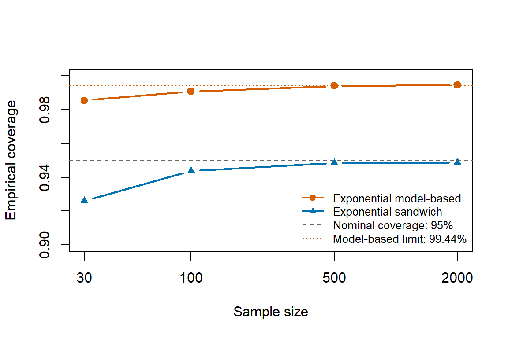

{
// Maximum-likelihood exploration: self-contained Observable JS / Quarto.
// No R packages, external JS libraries, or additional CSS are required.
const C = {
ink: "#35424d", muted: "#65727c", border: "#d9e0e5",
grid: "#e9edf0", blue: "#287cb5", orange: "#ad651b",
green: "#2a936d", purple: "#8955b7", surface: "#fbfcfe"
};
const state = {
model: "bernoulli", n: 20, view: "relative",
params: {
bernoulli: {truth: 0.65, candidate: 0.35},
normal: {truth: 0.6, candidate: -0.3}
},
u: [], z: []
};
function resample() {
state.u = Array.from({length: 120}, () => Math.random());
state.z = Array.from({length: 120}, () => {
const u = Math.max(Math.random(), Number.MIN_VALUE);
const v = Math.random();
return Math.sqrt(-2 * Math.log(u)) * Math.cos(2 * Math.PI * v);
});
}
resample();
const root = html`<section class="mle-lab">
<style>
.mle-lab { color:${C.ink}; background:${C.surface}; border:1px solid ${C.border};
border-left:4px solid ${C.blue}; border-radius:9px; padding:16px;
margin:1rem 0 1.4rem; font-family:var(--bs-body-font-family,system-ui,sans-serif); }
.mle-lab * { box-sizing:border-box; }
.mle-lab .mle-head {display:flex; justify-content:space-between; align-items:baseline;
gap:10px; flex-wrap:wrap; margin-bottom:13px;}
.mle-lab .mle-title {font-weight:700; font-size:1.12rem;}
.mle-lab .mle-sub {font-size:.85rem; color:${C.muted};}
.mle-lab .mle-controls {display:grid; grid-template-columns:1.05fr 1fr 1fr 1fr;
gap:12px; padding:13px; background:white; border:1px solid ${C.border}; border-radius:7px;}
.mle-lab .mle-control {min-width:0; display:grid; gap:5px; align-content:start;}
.mle-lab label {display:flex; justify-content:space-between; align-items:baseline;
flex-wrap:wrap; gap:4px; font-size:.86rem; font-weight:650;}
.mle-lab label output {color:${C.blue}; font-variant-numeric:tabular-nums;}
.mle-lab select {min-width:0; width:100%; background:white; color:${C.ink}; border:1px solid ${C.border};
border-radius:5px; font:inherit; padding:6px 7px;}
.mle-lab input[type=range] {width:100%; min-width:0; accent-color:${C.blue}; cursor:pointer;}
.mle-lab input.mle-candidate {accent-color:${C.orange};}
.mle-lab .mle-actions {display:flex; justify-content:space-between; align-items:center;
gap:8px; flex-wrap:wrap; margin:11px 0 13px;}
.mle-lab .mle-actions button {font:inherit; font-size:.87rem; cursor:pointer;
border:1px solid #cdd6dc; background:white; color:${C.ink};
border-radius:5px; padding:7px 11px;}
.mle-lab .mle-actions button:hover {background:#eff6fb; border-color:${C.blue};}
.mle-lab .mle-view {display:flex; align-items:center; gap:7px; font-size:.86rem;}
.mle-lab .mle-view select {width:auto; max-width:205px;}
.mle-lab .mle-panels {display:grid; grid-template-columns:1fr 1fr; gap:12px;}
.mle-lab .mle-panel {background:white; border:1px solid ${C.border};
border-radius:7px; padding:11px; min-width:0;}
.mle-lab .mle-panel-heading {font-size:.95rem; font-weight:700; margin-bottom:2px;}
.mle-lab .mle-panel-desc {font-size:.81rem; color:${C.muted}; min-height:2.7em;}
.mle-lab svg {width:100%; height:auto; display:block; overflow:visible;}
.mle-lab .mle-likelihood-chart {cursor:crosshair;}
.mle-lab .mle-key {display:flex; flex-wrap:wrap; gap:5px 13px;
margin:5px 0 0; font-size:.79rem; color:${C.muted};}
.mle-lab .mle-swatch {display:inline-block; width:13px; height:3px;
margin-right:5px; vertical-align:middle; border-radius:1px;}
.mle-lab .mle-summary {margin-top:13px; display:grid;
grid-template-columns:repeat(4,minmax(0,1fr)); gap:8px;}
.mle-lab .mle-stat {background:white; border:1px solid ${C.border};
border-radius:6px; padding:9px 10px; min-width:0;}
.mle-lab .mle-stat-label {font-size:.76rem; color:${C.muted};}
.mle-lab .mle-stat-value {font-weight:700; font-size:1.08rem;
font-variant-numeric:tabular-nums; overflow-wrap:anywhere;}
.mle-lab .mle-formula {font-size:.89rem; line-height:1.7; margin-top:12px;
background:white; border:1px solid ${C.border}; border-radius:6px; padding:10px 12px;}
.mle-lab .mle-math {font-family:Georgia,Cambria,serif; font-size:1.04em;}
.mle-lab .mle-foot {font-size:.83rem; color:${C.muted}; margin-top:9px; line-height:1.5;}
@media (max-width:800px) {
.mle-lab .mle-controls {grid-template-columns:1fr 1fr;}
.mle-lab .mle-panels {grid-template-columns:1fr;}
}
@media (max-width:460px) {
.mle-lab {padding:11px;}
.mle-lab .mle-summary {grid-template-columns:1fr 1fr;}
}
</style>
<div class="mle-head">
<span class="mle-title">Maximum likelihood estimation</span>
<span class="mle-sub">Fix the sample; vary the proposed parameter</span>
</div>
<div class="mle-controls">
<div class="mle-control">
<label for="mle-model">Statistical model</label>
<select class="mle-model" aria-label="Statistical model">
<option value="bernoulli">Bernoulli(p)</option>
<option value="normal">Normal(μ, 1)</option>
</select>
</div>
<div class="mle-control">
<label>Sample size <output class="mle-n-text"></output></label>
<input class="mle-n" type="range" min="5" max="100" step="1" value="20" aria-label="Sample size">
</div>
<div class="mle-control">
<label>Generating parameter <output class="mle-truth-text"></output></label>
<input class="mle-truth" type="range" aria-label="Generating parameter">
</div>
<div class="mle-control">
<label>Candidate parameter <output class="mle-candidate-text"></output></label>
<input class="mle-candidate" type="range" aria-label="Candidate parameter">
</div>
</div>
<div class="mle-actions">
<div>
<button class="mle-resample" type="button">New random sample</button>
<button class="mle-setmle" type="button">Move candidate to MLE</button>
</div>
<div class="mle-view">
<label for="mle-scale">Show</label>
<select class="mle-scale" aria-label="Likelihood scale">
<option value="relative">Relative likelihood</option>
<option value="log">Log-likelihood difference</option>
</select>
</div>
</div>
<div class="mle-panels">
<div class="mle-panel">
<div class="mle-panel-heading">1. Observed sample</div>
<div class="mle-panel-desc mle-data-desc"></div>
<svg class="mle-data-chart" viewBox="0 0 540 290" role="img" aria-label="Observed sample with fitted parameter"></svg>
</div>
<div class="mle-panel">
<div class="mle-panel-heading">2. Likelihood as a function of the parameter</div>
<div class="mle-panel-desc">Click the plot to change the candidate parameter.</div>
<svg class="mle-likelihood-chart" viewBox="0 0 540 290" role="img" aria-label="Likelihood curve and maximum likelihood estimate"></svg>
</div>
</div>
<div class="mle-key">
<span><i class="mle-swatch" style="background:${C.blue}"></i>Likelihood curve / sample</span>
<span><i class="mle-swatch" style="background:${C.orange}"></i>Candidate parameter</span>
<span><i class="mle-swatch" style="background:${C.green}"></i>MLE (best fitting)</span>
<span><i class="mle-swatch" style="background:${C.purple}"></i>Generating parameter</span>
</div>
<div class="mle-summary">
<div class="mle-stat"><div class="mle-stat-label">Sample</div><div class="mle-stat-value mle-sample"></div></div>
<div class="mle-stat"><div class="mle-stat-label">MLE</div><div class="mle-stat-value mle-estimate"></div></div>
<div class="mle-stat"><div class="mle-stat-label">Candidate</div><div class="mle-stat-value mle-proposal"></div></div>
<div class="mle-stat"><div class="mle-stat-label">Relative likelihood</div><div class="mle-stat-value mle-ratio"></div></div>
</div>
<div class="mle-formula">
<div class="mle-model-formula"></div>
<div class="mle-numeric-formula"></div>
</div>
<div class="mle-foot">
The <strong>data are held fixed</strong> as you move the candidate parameter. The likelihood
measures how well each parameter value explains those same observations; it is
<strong>not</strong> a probability distribution for the parameter. The generating value is
shown only because this is a simulation, and it generally differs from the sample MLE.
Increasing <em>n</em> often makes the likelihood more concentrated.
</div>
</section>`;
const $ = selector => root.querySelector(selector);
const fmt = (x, digits = 3) => Number.isFinite(x)
? x.toFixed(digits).replace(/0+$/, "").replace(/\.$/, "") : "−∞";
const clamp = (x, lo, hi) => Math.max(lo, Math.min(hi, x));
const cfg = () => state.model === "bernoulli"
? {symbol:"p", min:0, max:1, tmin:.05, tmax:.95, step:.01}
: {symbol:"μ", min:-3, max:3, tmin:-2, tmax:2, step:.01};
const param = () => state.params[state.model];
const sample = () => state.model === "bernoulli"
? state.u.slice(0,state.n).map(u => Number(u < param().truth))
: state.z.slice(0,state.n).map(z => z + param().truth);
const mean = xs => xs.reduce((a,b) => a + b, 0) / xs.length;
function logLike(theta, xs) {
const n = xs.length;
if (state.model === "normal") {
return -n * Math.log(2*Math.PI)/2 - xs.reduce((s,x) => s + (x-theta)**2,0)/2;
}
const successes = xs.reduce((a,b) => a+b, 0);
if ((theta === 0 && successes > 0) || (theta === 1 && successes < n)) return -Infinity;
return (successes === 0 ? 0 : successes * Math.log(theta)) +
(successes === n ? 0 : (n-successes) * Math.log1p(-theta));
}
// Pixel helpers shared by both SVG charts.
const W = 540, H = 290, pad = {left:49, right:15, top:24, bottom:45};
const iw = W-pad.left-pad.right, ih = H-pad.top-pad.bottom;
const Sx = (x, a, b) => pad.left + (x-a)/(b-a)*iw;
const Sy = (y, a, b) => pad.top + (b-y)/(b-a)*ih;
const svgText = (x,y,s,attrs="") =>
`<text x="${x}" y="${y}" ${attrs}>${s}</text>`;
const clip = (name) => `<defs><clipPath id="${name}"><rect x="${pad.left}" y="${pad.top}" width="${iw}" height="${ih}"/></clipPath></defs>`;
function grid(xTicks, yTicks, xa, xb, ya, yb, xLabel, yLabel, yFormatter=fmt) {
let s = `<rect x="${pad.left}" y="${pad.top}" width="${iw}" height="${ih}" fill="#fff" stroke="${C.border}"/>`;
for (const t of xTicks) {
const x=Sx(t,xa,xb);
s += `<line x1="${x}" x2="${x}" y1="${pad.top}" y2="${pad.top+ih}" stroke="${C.grid}"/>`;
s += svgText(x,H-23,fmt(t,2),`font-size="12" text-anchor="middle" fill="${C.muted}"`);
}
for (const t of yTicks) {
const y=Sy(t,ya,yb);
s += `<line x1="${pad.left}" x2="${pad.left+iw}" y1="${y}" y2="${y}" stroke="${C.grid}"/>`;
s += svgText(pad.left-8,y+4,yFormatter(t),`font-size="12" text-anchor="end" fill="${C.muted}"`);
}
s += svgText(pad.left+iw,H-4,xLabel,`font-size="13" text-anchor="end" fill="${C.muted}"`);
s += svgText(pad.left,14,yLabel,`font-size="13" fill="${C.muted}"`);
return s;
}
function pathOf(fn, xa, xb, ya, yb, num=400) {
let d="", pen=false;
for (let i=0;i<=num;i++) {
const x=xa+(xb-xa)*i/num, y=fn(x);
if (!Number.isFinite(y)) {pen=false; continue;}
// Clip vertically via the chart clipPath. Coordinates remain finite.
const py=Sy(clamp(y,ya-100,yb+100),ya,yb);
d += `${pen?"L":"M"}${Sx(x,xa,xb).toFixed(2)},${py.toFixed(2)} `;
pen=true;
}
return d;
}
function drawData(xs, thetaHat) {
const theta=param().candidate, truth=param().truth;
let s=clip("mle-data-clip")+`<rect width="${W}" height="${H}" fill="white"/>`;
if (state.model==="bernoulli") {
s += grid([1,Math.max(1,Math.round(state.n/4)),Math.max(1,Math.round(state.n/2)),
Math.max(1,Math.round(3*state.n/4)),state.n].filter((t,i,a)=>a.indexOf(t)===i),
[0,.25,.5,.75,1],1,state.n,-.08,1.12,"Trial index","Outcome (0 or 1)",v=>fmt(v,2));
s += `<g clip-path="url(#mle-data-clip)">`;
for (const [y,color,dash] of [[truth,C.purple,"4 5"],[thetaHat,C.green,"7 4"],[theta,C.orange,""]]) {
const py=Sy(y,-.08,1.12);
s += `<line x1="${pad.left}" y1="${py}" x2="${pad.left+iw}" y2="${py}" stroke="${color}" stroke-width="2" ${dash?`stroke-dasharray="${dash}"`:""} opacity=".85"/>`;
}
xs.forEach((v,i)=> {
s += `<circle cx="${Sx(i+1,1,state.n)}" cy="${Sy(v,-.08,1.12)}" r="${state.n>65?3:4.3}" fill="${C.blue}" stroke="white" stroke-width=".75"/>`;
});
s+=`</g>`;
$(".mle-data-desc").textContent =
"Each blue dot is one 0/1 observation; horizontal lines show the proposed and fitted success probabilities.";
} else {
const xa=-5.3, xb=5.3, ya=0, yb=.56;
const pdf=(x,mu)=> Math.exp(-((x-mu)**2)/2)/Math.sqrt(2*Math.PI);
s += grid([-4,-2,0,2,4],[0,.1,.2,.3,.4,.5],xa,xb,ya,yb,
"Observed value x","Normal density",v=>fmt(v,1));
s += `<g clip-path="url(#mle-data-clip)">`;
for(const [mu,color,dash] of [[truth,C.purple,"5 5"],[thetaHat,C.green,"7 5"],[theta,C.orange,""]]){
s += `<path d="${pathOf(x=>pdf(x,mu),xa,xb,ya,yb)}" fill="none" stroke="${color}" stroke-width="2.5" ${dash?`stroke-dasharray="${dash}"`:""}/>`;
}
xs.forEach((x,i)=>{
const xx=Sx(x,xa,xb);
const base=Sy(0,ya,yb);
s += `<line x1="${xx}" y1="${base}" x2="${xx}" y2="${base-11-(i%3)*3}" stroke="${C.blue}" stroke-width="1.3" opacity=".75"/>`;
});
s += `</g>`;
$(".mle-data-desc").textContent =
"Blue ticks are observations; curves are Normal densities with the candidate, fitted, and generating means.";
}
$(".mle-data-chart").innerHTML=s;
}
function drawLikelihood(xs, thetaHat) {
const {min,max,symbol}=cfg(), theta=param().candidate, truth=param().truth;
const best=logLike(thetaHat,xs);
const diff = t => logLike(t,xs)-best;
const yfn = t => state.view==="relative" ? Math.exp(Math.max(-750,diff(t))) : diff(t);
const lower=state.view==="relative" ? 0 : -12;
const upper=state.view==="relative" ? 1.05 : .65;
const ticks = state.view==="relative" ? [0,.25,.5,.75,1] : [-12,-9,-6,-3,0];
const xTicks=state.model==="bernoulli"?[0,.25,.5,.75,1]:[-3,-2,-1,0,1,2,3];
let s=clip("mle-lik-clip")+`<rect width="${W}" height="${H}" fill="white"/>`;
s+=grid(xTicks,ticks,min,max,lower,upper,symbol,
state.view==="relative"?"L(θ) / L(MLE)":"ℓ(θ) − ℓ(MLE)",v=>fmt(v,2));
s+=`<g clip-path="url(#mle-lik-clip)">`;
const d=pathOf(t=>Math.max(lower,yfn(t)),min,max,lower,upper,700);
s+=`<path d="${d}" fill="none" stroke="${C.blue}" stroke-width="3.4" stroke-linejoin="round"/>`;
for (const [value,color,dash] of [[truth,C.purple,"4 5"],[thetaHat,C.green,"7 4"],[theta,C.orange,""]]) {
const xx=Sx(value,min,max);
s+=`<line x1="${xx}" y1="${pad.top}" x2="${xx}" y2="${pad.top+ih}" stroke="${color}" stroke-width="2" ${dash?`stroke-dasharray="${dash}"`:""} opacity=".9"/>`;
}
s+=`<circle cx="${Sx(theta,min,max)}" cy="${Sy(Math.max(lower,yfn(theta)),lower,upper)}" r="6.5" stroke="white" stroke-width="2" fill="${C.orange}"/>`;
s+=`<circle cx="${Sx(thetaHat,min,max)}" cy="${Sy(yfn(thetaHat),lower,upper)}" r="5" stroke="white" stroke-width="1.5" fill="${C.green}"/>`;
s+=`</g>`;
$(".mle-likelihood-chart").innerHTML=s;
}
function syncControls() {
const c=cfg(), p=param();
$(".mle-model").value=state.model;
$(".mle-n").value=state.n;
$(".mle-n-text").textContent=String(state.n);
const truth=$(".mle-truth"), candidate=$(".mle-candidate");
truth.min=c.tmin; truth.max=c.tmax; truth.step=c.step; truth.value=p.truth;
candidate.min=c.min; candidate.max=c.max; candidate.step=c.step; candidate.value=p.candidate;
$(".mle-truth-text").textContent=`${c.symbol}₀ = ${fmt(p.truth,2)}`;
$(".mle-candidate-text").textContent=`${c.symbol} = ${fmt(p.candidate,2)}`;
$(".mle-scale").value=state.view;
}
function render() {
syncControls();
const xs=sample(), thetaHat=mean(xs), theta=param().candidate;
const ellDiff=logLike(theta,xs)-logLike(thetaHat,xs);
const relative=Math.exp(Math.max(-750,ellDiff));
$(".mle-sample").textContent=state.model==="bernoulli"
? `${xs.reduce((a,b)=>a+b,0)} of ${xs.length} ones` : `n = ${xs.length}`;
$(".mle-estimate").textContent=`${cfg().symbol}̂ = ${fmt(thetaHat)}`;
$(".mle-proposal").textContent=`${cfg().symbol} = ${fmt(theta)}`;
$(".mle-ratio").textContent=relative<.0005?"< 0.001":fmt(relative);
if(state.model==="bernoulli"){
const s=xs.reduce((a,b)=>a+b,0);
$(".mle-model-formula").innerHTML=
`<strong>Bernoulli likelihood:</strong> <span class="mle-math">L(p; x) = p<sup>s</sup>(1−p)<sup>n−s</sup>, p̂ = s/n</span> `+
`(here, s = ${s}, n = ${xs.length}).`;
}else{
$(".mle-model-formula").innerHTML=
`<strong>Normal likelihood (known variance 1):</strong> `+
`<span class="mle-math">L(μ; x) = (2π)<sup>−n/2</sup> exp{−½ Σ(xᵢ−μ)²}, μ̂ = x̄</span>.`;
}
$(".mle-numeric-formula").innerHTML =
`<strong>At the selected parameter:</strong> `+
`<span class="mle-math">ℓ(θ) − ℓ(θ̂) = ${fmt(ellDiff)}</span>; `+
`<span class="mle-math">L(θ)/L(θ̂) = ${relative<.0005?"< 0.001":fmt(relative)}</span>.`;
drawData(xs,thetaHat);
drawLikelihood(xs,thetaHat);
}
$(".mle-model").addEventListener("change",e=>{state.model=e.target.value;render();});
$(".mle-n").addEventListener("input",e=>{state.n=Number(e.target.value);render();});
$(".mle-truth").addEventListener("input",e=>{param().truth=Number(e.target.value);render();});
$(".mle-candidate").addEventListener("input",e=>{param().candidate=Number(e.target.value);render();});
$(".mle-scale").addEventListener("change",e=>{state.view=e.target.value;render();});
$(".mle-resample").addEventListener("click",()=>{resample();render();});
$(".mle-setmle").addEventListener("click",()=>{
param().candidate=clamp(mean(sample()),cfg().min,cfg().max);
render();
});
$(".mle-likelihood-chart").addEventListener("pointerdown",e=>{
const r=e.currentTarget.getBoundingClientRect();
const coord=(e.clientX-r.left)/r.width*W;
const {min,max}=cfg();
const raw=min+(coord-pad.left)/iw*(max-min);
param().candidate=Math.round(clamp(raw,min,max)*100)/100;
render();
});
render();
return root;
}Themes of Mathematical Statistics
“Statistics is not a subset of mathematics, and calls for skills and judgement that are not exclusively mathematical. On the other hand, there is a large intersection between the two disciplines. Statistical theory is serious mathematics.” — Sir John Kingman
- Descriptive statistics summarize and explore features of observed data.
- The goal is to uncover patterns, identify unusual observations, and generate questions by informally examining relationships. This should precede predictive or inferential modeling ON A DIFFERENT DATA SET FROM THE SAME DGP. Observed patterns suggest candidate predictors, variable transformations, and model forms for prediction, while population counterparts of descriptive summaries provide estimands for inference.
- Predictive statistics use observed data to predict new or unobserved outcomes.
- The goal is to consider modeling beyond parametric likelihoods, emphasizing out-of-sample performance. You should be able to fit basic regression models for continuous and binary outcomes and understand proper scoring rules for probability predictions and appropriate performance metrics for classifiers.
- Inferential statistics estimate population quantities and quantify uncertainty.
- The goal is to define an estimand, explain the assumptions connecting the data to that target, and construct an estimator and confidence interval. We begin with parametric likelihood inference: justifying a working distribution, deriving MLEs, and using inverse Fisher information for asymptotic variances and confidence intervals under the required conditions.
1. Descriptive Statistics
Although descriptive statistics often receive little attention, they are how we frame scientific questions, understand the observed data, and informally assessing modeling assumptions. Omitting it from an introduction to mathematical statistics is like teaching someone to follow a recipe without inspecting the ingredients: they may execute every step correctly without noticing that the recipe does not suit what they have.
THIS IS NOT USELESS buyt really should be the first step, tuekys eda
Of course, throwing out statistical standards wholesale doesn’t solve the problem either. Tukey explicit that EDA shouldn’t be done on the same data that was then used for a subsequent confirmatory analysis (a la Leamer’s essay). Lots of introductory textbooks get this point wrong, suggesting that EDA is the first step in any data analysis. Making basic plots and acknowledging missing data and reformatting as necessary should be considered “prepatory analysis” rather than “exploratory”, and too many texts do not make this critical distinction. - richard hahn
I think theere is value in sewparating stages of analysis and reocgnizing statiics as an iterative process we have exploratory analysis and then confirmatory (whihc is more likley to be ifnerential)
Confirmatory analysis (orthodox error-controlled hypothesis testing) should be done on a data set for one set of questions (arising, presumably, from a previous EDA on an earlier data set). For these questions, pre-registration and replication attempts are welcome! But that data has more life in it yet — that same data can then be used for a subsequent EDA, which would inform a subsequent CDA of yet a third distinct data set. EDA should come after CDA on a given data set, but before CDA on subsequent data sets. Ideally, a public record of all of this would be kept somewhere for later cross-referencing. - ricahrd hahn
2. Inferential Statistics
A statistical model is a collection of probability distributions for the observed data, intended to represent the data-generating mechanisms (DGPs) we consider plausible. We may write a statistical model as
\[ \mathcal P = \{P:P\text{ satisfies the assumptions of the model}\}. \]
A model is called parametric if it can be indexed (“parameterized”) by a fixed finite-dimensional parameter,
\[ \mathcal P = \{P_\theta:\theta\in\Theta\}, \qquad \Theta\subseteq\mathbb R^d, \]
for some fixed positive integer \(d\). The set \(\Theta\) is called the parameter space and \(d\) is its dimension.
Examples of Parametric Models
A parametric model is indexed by a parameter \(\theta\) taking values in a fixed finite-dimensional parameter space \(\Theta\subseteq\mathbb R^d\). The dimension \(d\) does not grow with the sample size.
Normal location-scale model.
\[ \mathcal P = \left\{ N(\mu,\sigma^2): (\mu,\sigma)\in\mathbb R\times\mathbb R_+ \right\}. \]
Here, \(\theta=(\mu,\sigma)\) and \(\Theta=\mathbb R\times\mathbb R_+\). Thus, this is a two-dimensional parametric model.
Negative binomial model.
\[ \mathcal P = \left\{ \operatorname{NB2}(\mu,\alpha): \mu>0,\; \alpha>0 \right\}. \]
Under the NB2 parameterization, \(E(X)=\mu\) and \(\operatorname{Var}(X)=\mu+\alpha\mu^2\). The parameter is \(\theta=(\mu,\alpha)\), so this is a two-dimensional parametric model.
Finite multinomial model.
\[ \mathcal P = \left\{ \operatorname{Multinomial}(p_1,\ldots,p_K): p_k\geq0,\; \sum_{k=1}^K p_k=1 \right\}. \]
Because the probabilities sum to one, only \(K-1\) components are free. We may therefore parameterize the model using \(\theta=(p_1,\ldots,p_{K-1})\), making it a \((K-1)\)-dimensional parametric model for fixed \(K\).
Exponential survival model.
\[ \mathcal P = \left\{ P_\lambda: S_\lambda(t)=\exp(-\lambda t), \; \lambda>0 \right\}. \]
The entire event-time distribution is determined by the scalar parameter \(\lambda\), so this is a one-dimensional parametric model.
statistics is about the ivnerse problem on these models, identifying \(\mathcal P_0\) from a set \(\mathcal{P}\)
LOOK AT ETHAN’s NOTES, SOURCVE breheny notes, section 7.2 casella berger
We focus primarily on parametric frequentist mathematical statistics here, leaving more general estimation techniques to Advanced Mathematical Statistics. A recurring task in both sections is deriving asymptotic distributions and estimating their variances, which provide the basis for confidence intervals and hypothesis tests about population estimands.
When Testing ‘Effects’: You may not be testing what you think you are testing
Getting the standard error right does not guarantee that we are answering the question we actually care about. We can derive an estimator, construct a confidence interval, and carry out a perfectly valid hypothesis test—all for the wrong target.
Suppose we compare average outcomes between people who received a treatment and people who did not.
We might want to ask, “Does the treatment improve outcomes?”
But our statistical tests only address, “Do these two groups have different average outcomes?”
It is subtle and more easily explained using causal inference notation and a lot of tiem getting comfortable with potential outcomes but those are different questions becasue there may be common causes (confounders) that ionfluence group memebrship and otucomes. Most important to understand is this is not a fundamentally statiitcla problem and larger sample sizes and increased precision/fancier methods does not solve the issue.
A small p-value or narrow confidence interval does not resolve this distinction. Even an enormous sample can estimate the observed difference very precisely without telling us how outcomes would change if we intervened to assign treatment.
Connecting the observed comparison to the treatment effect requires additional assumptions or a study design, such as randomization, that justifies that connection. Understandign this distinction and building methods for causal inference more genrally is my favorite area of statitics. it has a distinctly “modern” feel, incorprating machine learning and empirical process theory to expand the horizon of what we mean by statitics. We examine this distinction in Causality and Causal Inference.
Core Ideas: Frequentist Maximum Likelihood Estimation and Likelihood based/Model based inference/hyptohesis testing
Method of Moments
looks silly but is actually yuge
Likelihood
Suppose we have a random variable \(X\) whose distribution belongs to a known parametric family \(\{P_\theta:\theta\in\Theta\}\), with probability density or mass function \(f(x;\theta)\). The functional form of the distribution is known, but the parameter \(\theta\in\Theta\subseteq\mathbb R^p\) is unknown.
The most important approach using the observed data to obtain good estimates of the unknown parameter \(\theta\) is likelihood theory, which uses the probability model for the observed data to construct estimators and perform inference. The basic idea is to identify parameter values under which the observed data are relatively more plausible.
Definition (Likelihood Functions)
Suppose we observe data \(X_1,\ldots,X_n\) that are independent and identically distributed (i.i.d.) from a common density or probability mass function \(f(x;\theta)\). Under the i.i.d. assumption, the joint density of the sample is
\[ f(x_1,\ldots,x_n;\theta) = \prod_{i=1}^n f(x_i;\theta). \]
Once the data \(x_1,\ldots,x_n\) are observed and treated as fixed, we can instead regard this expression as a function of the unknown parameter \(\theta\). This is called the likelihood function,
\[ L(\theta) = \prod_{i=1}^n f(x_i;\theta). \]
Although the likelihood and joint density have the same mathematical expression, they are interpreted differently. A probability density describes how the data vary for a fixed parameter, whereas a likelihood describes how the relative support for different parameter values varies for fixed observed data.
In particular, the likelihood is not a probability distribution over \(\theta\) and need not integrate to one over the parameter space.
Because products can be difficult to work with, we usually take the logarithm to obtain the log-likelihood,
\[ \ell(\theta) = \log L(\theta) = \sum_{i=1}^n\log f(x_i;\theta). \]
The logarithm is strictly increasing, so maximizing the likelihood is equivalent to maximizing the log-likelihood.
MLE
The maximum likelihood estimator (MLE) is defined as the parameter value that maximizes the likelihood of the observed data,
\[ \boxed{ \hat\theta = \arg\max_{\theta\in\Theta}L(\theta) = \arg\max_{\theta\in\Theta}\ell(\theta). } \]
The intuition is straightforward: among the parameter values allowed by our model, we select the one under which the observed data have the greatest likelihood.
Mathematically, this is an ordinary optimization problem. The functions being optimized now have special statistical names, but we can use the same tools from calculus and numerical optimization. For a scalar parameter \(\theta\), if the log-likelihood is differentiable and the maximum occurs in the interior of the parameter space, a necessary first-order condition is
\[ \frac{d\ell(\hat\theta)}{d\theta}=0. \]
A negative second derivative at a stationary point,
\[ \frac{d^2\ell(\hat\theta)}{d\theta^2}<0, \]
establishes a strict local maximum. To establish a global maximum, we must also examine the overall shape of the likelihood and its behavior at the boundaries.
For a vector parameter \(\theta\in\mathbb R^p\), the first derivative becomes the gradient,
\[ \nabla_\theta\ell(\theta) = \begin{pmatrix} \frac{\partial\ell(\theta)}{\partial\theta_1}\\ \vdots\\ \frac{\partial\ell(\theta)}{\partial\theta_p} \end{pmatrix}, \]
and the second derivative becomes the Hessian matrix of the likelihood/Jacobian of the score,
\[ \nabla_\theta^2\ell(\theta) = \frac{\partial^2\ell(\theta)} {\partial\theta_j\partial\theta_k} \]
An interior maximizer must satisfy
\[ \nabla_\theta\ell(\hat\theta)=0 \]
A negative definite Hessian at a stationary point is sufficient for a strict local maximum.
Score and Fisher Information
The first and second derivatives of the log-likelihood are so important in statistics that they have their own names.
Definition (Likelihood Score)
The score function is the gradient of the log-likelihood,
\[ U_n(\theta) = \nabla_\theta\ell(\theta) = \sum_{i=1}^n \nabla_\theta\log f(X_i;\theta). \]
We can find an MLE \(\hat\theta_n\) by solving \(U_n(\hat\theta_n)=0\) and checking the boudnaries of teh parameter space.
The score describes how the log-likelihood changes as we perturb the parameter. Its direction indicates how the parameter should change to increase the likelihood, and at an interior maximum the gradient is zero.
Properties of teh score
expectation of the score is zero
The second derivative of the likelihood (likelihood hessian in multiple variables) or first derivative of the score (jacobian of the score) describes the curvature of the log-likelihood. Define the observed information matrix as
\[ J_n(\theta) = -\nabla_\theta^2\ell(\theta) \]
The negative sign reflects the fact that the Hessian is typically negative definite near a regular maximum. The corresponding Fisher information matrix for one observation is
\[ I(\theta) = E_\theta\left[ -\nabla_\theta^2\log f(X;\theta) \right]. \]
Under appropriate regularity conditions (domination) Fisher information can equivalently be written as
\[ I(\theta) = E_\theta\left[ s(X;\theta)s(X;\theta)^\top \right], \]
where
\[ s(X;\theta)=\nabla_\theta\log f(X;\theta) \]
is the score contribution from one observation. For i.i.d. observations, the expected information in the full sample is \(nI(\theta)\).
INFORMATION EQUALITY VIA SWAPPING
:::.callout-tip title=“Interpreting Fisher Information”} Intuitively, Fisher information measures how strongly the probability model distinguishes nearby parameter values. Under the information equality two equivalent ways to consider this is vai the variance of the score or the negative curvature. this intuitively makes sense!
:::
The following examples illustrate how the same general optimization framework produces familiar estimators.
Information Equality and sqwapping integration and differentiation
Cramer Rao Lower Bound
Gauss Markov Theorem
Sampling Distributions
can be udnerstood without CI
Hypothesis Tests
Three classical approaches to hypothesis testing arise in parametric likelihood theory:
Wald tests: Evaluate how far an estimated parameter is from its hypothesized value, relative to its estimated sampling variability.
Score tests (Lagrange multiplier tests): Evaluate the derivative of the log-likelihood at the parameter estimate obtained under the null hypothesis.
Likelihood ratio tests: Compare the maximized likelihood under the null hypothesis with the maximized likelihood under the unrestricted model.
Although all three originate in parametric likelihood theory, Wald tests extend most directly to general statistical models. They require only an estimator with a suitable asymptotic distribution and a consistent estimator of its variance. Consequently, Wald-type inference is widely used with \(M\)-estimators, \(Z\)-estimators, and semiparametric estimators.
Score and likelihood ratio tests are more closely tied to the structure of a likelihood function. They can also be generalized beyond parametric likelihood models, through methods such as generalized score tests, GMM criterion-distance tests, and empirical likelihood, but these extensions generally require additional mathematical structure and are less automatic.
Under standard regularity conditions, Wald, score, and likelihood ratio tests are asymptotically equivalent to first order, having the same limiting null distribution and local asymptotic power. However, their finite-sample behavior can differ. In regular parametric likelihood models, likelihood ratio tests are often preferred because of their invariance to reparameterization and favorable higher-order properties, including the availability of Bartlett corrections. Score tests are often attractive alternatives, while Wald tests can be more sensitive to parameterization and finite-sample approximations. This preference is not a universal ordering of finite-sample size or power.
rejection regions interpretation chapter 8 casella berger
BUt wehre do our hypothesis actualyl coem from? the chicken and the egg rpoblem
CI
“Mathematics is the logic of certainty, Statistics is the logic of uncertainty.” — Joseph Blitzstein
chapter 9 casella beregr, interval estimation as ainversion of a hypothesis test
CI via samplingf distribution centering on parameter
p values
 (https://imgs.xkcd.com/comics/p_values.png){width=“55%” fig-align=“center”}
(https://imgs.xkcd.com/comics/p_values.png){width=“55%” fig-align=“center”}
what is a p value? intuitively it is a measure of surprise ina particualr result under s null hypothesis 3 equivalnet perspectives
under null hypothesis the proabiltiy of seeing something at least as extreme (given null is true)
the probaiblity integral transform of the statitics/estimator
the smallest slpah value that would lead toa rejection of the test given the obsevred data
p value unioform simluation
“There’s a whole intellectual edifice built up around the idea that there are rules we ought to follow so that we don’t trick ourselves into believing theories that are actually wrong. It’s a nice system, all things told, but it really only works if we have a ready supply of hypotheses at hand. Statisticians, for the most part, are conspicuously mute on this topic.”
— Richard Hahn, (2025)
Hahn talks about the pepperian view on hypothesis and how fasifiability is obviously not enough to describe Science witha cipital S
Various Key ideas
jensens inequality, sufficient statistics/ancillary statistics, p[robabiltiy inrtegral transform, uniquely identifiable estimands
discussion of frequentist infernedce not obeying the “likelihohdo principle”
whats a p value?
sufficient statistics (also how they determine min dimension in mixture models)
Putting it all together - Observe some data and do frequerntist MLE
Deriving a maximum likelihood estimator, its asymptotic distribution, and a confidence interval is a useful test of understanding frequentist likelihood theory. Starting from a working probability model, we must distinguish what follows from the assumed likelihood from what remains valid under the actual data-generating process.
Suppose we observe \[ Y_1,\ldots,Y_n \overset{\mathrm{iid}}{\sim} \operatorname{Gamma}\left(k,\ \text{scale}=\frac{\mu_0}{k}\right), \] where \(k=2\) and \(\mu_0=6\). Therefore, \[ E_0[Y_i]=\mu_0=6, \qquad \operatorname{Var}_0(Y_i)=\frac{\mu_0^2}{k}=18. \]
Here, \(E_0\) and \(\operatorname{Var}_0\) denote expectation and variance under the true data-generating process.
We estimate the population mean using three working models:
| Working model | Distributional assumption | Unknown parameters |
|---|---|---|
| Correct | Gamma with known shape \(k=2\) | Mean \(\mu>0\); variance \(\mu^2/2\) |
| Incorrect | Normal | Mean \(m\in\mathbb R\) and variance \(v>0\) |
| Incorrect | Exponential | Mean \(m>0\); variance \(m^2\) |
The estimand is the true population mean \(\mu_0\) in all three cases.
Example: Frequentist MLE, Correctly Specified Gamma Distribution
Parameterizing the Gamma distribution by its mean \(\mu\) and known shape \(k\), its density is \[ f_\mu(y) = \frac{k^k}{\Gamma(k)\mu^k} y^{k-1}\exp\left(-\frac{ky}{\mu}\right), \qquad y>0. \]
Ignoring terms independent of \(\mu\), the log-likelihood is \[ \ell_n(\mu) = -nk\log\mu-\frac{k}{\mu}\sum_{i=1}^nY_i+C. \]
Differentiating gives the score \[ U_n(\mu) = -\frac{nk}{\mu} +\frac{k}{\mu^2}\sum_{i=1}^nY_i = \frac{nk}{\mu^2}(\bar Y_n-\mu). \]
The score is positive for \(\mu<\bar Y_n\) and negative for \(\mu>\bar Y_n\), so \[ \boxed{\widehat\mu_\Gamma=\bar Y_n.} \]
The Fisher information per observation is \[ I_\Gamma(\mu) = -E_\mu\left[ \frac{\partial^2}{\partial\mu^2}\log f_\mu(Y) \right] = \frac{k}{\mu^2}. \]
Because the model is correctly specified, standard likelihood theory gives \[ \sqrt n(\widehat\mu_\Gamma-\mu_0) \rightsquigarrow N\left(0,I_\Gamma(\mu_0)^{-1}\right) = N\left(0,\frac{\mu_0^2}{k}\right). \]
A plug-in standard error and approximate 95% Wald confidence interval are \[ \widehat{\operatorname{se}}_\Gamma = \frac{\widehat\mu_\Gamma}{\sqrt{kn}}, \qquad \operatorname{CI}_\Gamma = \widehat\mu_\Gamma \pm z_{0.975}\frac{\widehat\mu_\Gamma}{\sqrt{kn}}. \]
Example: Frequentist MLE, Incorrectly Specified Normal Distribution
Now suppose we incorrectly assume \[ Y_i\sim N(m,v), \] with both \(m\) and \(v\) unknown. The working log-likelihood is \[ \ell_n(m,v) = -\frac n2\log(2\pi v) -\frac{1}{2v}\sum_{i=1}^n(Y_i-m)^2. \]
The score equations are \[ \frac{\partial\ell_n}{\partial m} = \frac1v\sum_{i=1}^n(Y_i-m)=0, \] and \[ \frac{\partial\ell_n}{\partial v} = -\frac{n}{2v} +\frac{1}{2v^2}\sum_{i=1}^n(Y_i-m)^2=0. \]
Solving yields \[ \boxed{ \widehat m_N=\bar Y_n, \qquad \widehat v_N=\frac1n\sum_{i=1}^n(Y_i-\bar Y_n)^2. } \]
These maximize the Normal working likelihood even though the data are not Normal.
Since \(\widehat m_N=\bar Y_n\), the central limit theorem under the true DGP gives \[ \sqrt n(\widehat m_N-\mu_0) \rightsquigarrow N\left(0,\frac{\mu_0^2}{k}\right). \]
Moreover, the law of large numbers gives \[ \widehat v_N \overset{p}{\longrightarrow} \operatorname{Var}_0(Y) = \frac{\mu_0^2}{k}. \]
Consequently, the usual Normal-model standard error, \[ \widehat{\operatorname{se}}_N = \sqrt{\frac{\widehat v_N}{n}}, \] consistently estimates the true sampling standard deviation of the mean estimator. By Slutsky’s theorem, \[ \frac{\widehat m_N-\mu_0} {\sqrt{\widehat v_N/n}} \rightsquigarrow N(0,1). \]
Therefore, \[ \operatorname{CI}_N = \widehat m_N \pm z_{0.975}\sqrt{\frac{\widehat v_N}{n}} \] is an asymptotically valid 95% confidence interval for \(\mu_0\), despite the incorrect distributional assumption.
The reason is specific: the Normal model estimates its variance freely, and that estimate converges to the true variance. This does not imply that all Normal-model inference remains valid under Gamma data.
Example: Frequentist MLE, Incorrectly Specified Exponential Distribution
Finally, suppose we incorrectly assume an Exponential distribution with unknown mean \(m>0\): \[ f_m(y)=\frac1m\exp\left(-\frac ym\right), \qquad y>0. \]
Unlike the Normal model, this model imposes a relationship between the mean and variance: \[ E_m[Y]=m, \qquad \operatorname{Var}_m(Y)=m^2. \]
Its working log-likelihood is \[ \ell_n(m) = -n\log m-\frac1m\sum_{i=1}^nY_i. \]
The score is \[ U_n(m) = -\frac nm+\frac1{m^2}\sum_{i=1}^nY_i = \frac n{m^2}(\bar Y_n-m). \]
Again, the score changes from positive to negative at the sample mean, giving \[ \boxed{\widehat m_E=\bar Y_n.} \]
Thus, the Exponential MLE remains consistent for the true mean: \[ \widehat m_E\overset{p}{\longrightarrow}\mu_0. \]
However, the Fisher information computed under the Exponential working model is \[ I_E(m) = -E_m\left[ \frac{\partial^2}{\partial m^2}\log f_m(Y) \right] = \frac1{m^2}. \]
Using its inverse as the asymptotic variance would suggest \[ \widehat{\operatorname{se}}_{E,\mathrm{model}} = \frac{\widehat m_E}{\sqrt n}, \] and the nominal 95% confidence interval \[ \operatorname{CI}_{E,\mathrm{model}} = \widehat m_E \pm z_{0.975}\frac{\widehat m_E}{\sqrt n}. \]
But the actual asymptotic distribution is determined by the true Gamma DGP: \[ \sqrt n(\widehat m_E-\mu_0) \rightsquigarrow N\left(0,\frac{\mu_0^2}{k}\right), \] not \(N(0,\mu_0^2)\).
The model-based standard error is therefore too large: \[ \frac{\widehat{\operatorname{se}}_{E,\mathrm{model}}} {\mu_0/\sqrt{kn}} = \sqrt{k}\frac{\widehat m_E}{\mu_0} \overset{p}{\longrightarrow} \sqrt{k}. \]
For \(k=2\), it is asymptotically too large by a factor of \(\sqrt2\).
Indeed, \[ \frac{\widehat m_E-\mu_0} {\widehat m_E/\sqrt n} \rightsquigarrow N\left(0,\frac1k\right). \]
Consequently, the limiting coverage of the nominal 95% interval is \[ \begin{aligned} \lim_{n\to\infty} P_0\{\mu_0\in\operatorname{CI}_{E,\mathrm{model}}\} &= P\{|Z|\le z_{0.975}\sqrt{k}\}\\ &= 2\Phi(z_{0.975}\sqrt{k})-1\\ &\approx 0.9944, \qquad Z\sim N(0,1). \end{aligned} \]
The interval is conservative: its limiting coverage is approximately 99.44%, rather than the advertised 95%. Increasing the sample size does not remove this discrepancy.
Conceptual Takeaway
All three working likelihoods yield exactly the same estimator: \[ \widehat\mu_\Gamma = \widehat m_N = \widehat m_E = \bar Y_n. \]
Under the true DGP, this estimator has \[ E_0[\bar Y_n]=\mu_0, \qquad \operatorname{Var}_0(\bar Y_n)=\frac{\mu_0^2}{kn}, \] regardless of which likelihood led us to it.
What changes is how the working model estimates that sampling variance:
| Working model | Estimated variance of the mean estimator | Consistent under the Gamma DGP? |
|---|---|---|
| Gamma, known shape \(k\) | \(\bar Y_n^2/(kn)\) | Yes |
| Normal | \(\{n^{-1}\sum_i(Y_i-\bar Y_n)^2\}/n\) | Yes |
| Exponential | \(\bar Y_n^2/n\) | No, unless \(k=1\) |
Correct specification of the entire distribution is not necessary for valid inference about a particular parameter. But consistency of the point estimator alone does not justify its model-based standard error.
Numerical Optimization and the EM Algorithm
In many statistical models the score equations are nonlinear or too complicated to solve explicitly.
EXAMPLE
In these types of more difficult settings, we use iterative numerical algorithms. The main idea is a difficult likelihood optimization problem can sometimes be replaced by a sequence of simpler optimization problems.
For example, Newton-Raphson uses a first-order Taylor approximation of the score around the current parameter estimate to move toward a stationary point of the log-likelihood,
\[ \theta^{(t+1)} = \theta^{(t)} - \left[ \nabla_\theta^2\ell(\theta^{(t)}) \right]^{-1} U_n(\theta^{(t)}). \]
EM Algorithm
The Expectation-Maximization (EM) algorithm is an iterative method for maximum likelihood estimation that is particularly useful when a model involves missing or latent variables.
Suppose \(Y\) denotes the observed data, \(Z\) denotes missing or latent data, and \(\theta\) is the unknown parameter. If we had access to both \(Y\) and \(Z\), we could construct the complete-data likelihood \(f(Y,Z;\theta)\), which may be relatively easy to maximize.
However, because \(Z\) is unobserved, we must instead work with the observed-data likelihood, obtained by integrating out the missing variables:
\[ L(\theta;Y) = f(Y;\theta) = \int f(Y,Z;\theta)\,dZ. \]
Directly maximizing this likelihood may be difficult, even when maximizing the complete-data likelihood would be straightforward.
The key idea behind EM is to use the simpler complete-data likelihood to iteratively maximize the observed-data likelihood without directly optimizing the integral. To do this, we must specify a complete-data model \(f(Y,Z;\theta)\) whose marginal distribution for \(Y\) agrees with our observed-data model. The latent variables need not represent genuinely missing observations; they can also be introduced specifically to simplify the optimization problem.
Starting with an initial parameter estimate \(\theta^{(0)}\), the EM algorithm alternates between two steps:
Expectation (E-step). Given the observed data \(Y\) and our current parameter estimate \(\theta^{(t)}\), ask: What is the expected complete-data log-likelihood, averaging over the missing data given what we currently know?
We calculate
\[ Q(\theta\mid\theta^{(t)}) = E_{\theta^{(t)}}[ \log f(Y,Z;\theta)\mid Y ], \]
or equivalently,
\[ Q(\theta\mid\theta^{(t)}) = \int \log f(Y,z;\theta) f(z\mid Y;\theta^{(t)})\,dz. \]
Importantly, \(\theta^{(t)}\) is held fixed and determines the conditional distribution of the missing data, while \(\theta\) remains the argument of the log-likelihood. Thus, the E-step produces a function of \(\theta\) that averages over our uncertainty about \(Z\).
Maximization (M-step). Given the expected complete-data log-likelihood constructed in the E-step, ask: Which value of \(\theta\) maximizes this function?
We update the parameter estimate according to
\[ \theta^{(t+1)} = \arg\max_{\theta\in\Theta} Q(\theta\mid\theta^{(t)}). \]
This updated estimate is then used to calculate a new conditional distribution for the missing data in the next E-step.
We repeat these two steps until convergence. Under the usual EM construction, each iteration does not decrease the observed-data likelihood, even though we are maximizing the expected complete-data log-likelihood rather than the observed-data likelihood directly.
The important distinction is that the E-step does not generally replace missing observations with their expected values. Instead, it takes the conditional expectation of the entire complete-data log-likelihood, producing a function that is often easier to optimize.
EM is not guaranteed to find the global maximum, and convergence can be slow. Its usefulness depends on finding a complete-data representation for which both the E-step and M-step are computationally manageable.
Bayesian Likelihood-Based Inference
bayesian simply integrate out nuisance
Matybe add in psuedo likleihood + posteriuor calibration? + gibbs sampling?
ADD in
Rethinking Probaibltiy/interpretations
fair bets bayesian long run frequency
no matter the tack taken it boils down to axioms
So far, we have taken the frequentist perspective, treating \(\theta\) as an unknown but fixed parameter and using the observed data to construct an estimator \(\hat\theta\).
The Bayesian perspective instead places a probability distribution on the unknown parameter. Given a prior density \(\pi(\theta)\) and likelihood \(L(\theta)\), Bayes’ theorem gives the posterior distribution,
\[ \pi(\theta\mid x_1,\ldots,x_n) = \frac{ L(\theta)\pi(\theta) }{ \int_\Theta L(t)\pi(t)\,dt }. \]
Thus the likelihood is central to both frequentist and Bayesian inference, but the inferential procedures differ.
Frequentist likelihood theory typically uses the likelihood to construct estimators, confidence regions, and hypothesis tests. Bayesian inference combines the likelihood with a prior distribution to obtain a posterior distribution, from which posterior summaries and credible regions can be calculated.
For example, a Bayesian may report the posterior mean
\[ E[\theta\mid X_1,\ldots,X_n], \]
or the maximum a posteriori (MAP) estimate,
\[ \hat\theta_{\mathrm{MAP}} = \arg\max_{\theta\in\Theta} L(\theta)\pi(\theta). \]
The MAP estimate resembles an MLE, except that it also incorporates the prior density.
Neither framework is uniformly easier or better. Bayesian hierarchical models can be particularly natural when many parameters share information through a common prior structure. Frequentist methods can be attractive when we want procedures with explicitly characterized repeated-sampling properties, often without specifying a prior.
Under suitable regularity conditions, frequentist and Bayesian procedures can also produce similar large-sample conclusions. For example, Bernstein-von Mises results establish circumstances under which a Bayesian posterior is approximately normal and closely related to the sampling distribution of the MLE.
Resampling
bootstrapping I do think having a set of standard problems/datasets that classifiers are evaluated by is a sensible check alongside more traditional testing
Advanced (but useful) extension. estimating equation based information and The Sandwich Variance
Maximum likelihood is an instance of M-estimation, because it optimizes a sample criterion. When the estimator solves a score equation, it can also be studied through Z-estimation. The latter perspective extends beyond likelihood scores to more general estimating equations.
Under suitable regularity conditions, the sandwich formula gives the asymptotic variance of an estimator around its population target without requiring a correctly specified likelihood.
This does not automatically make inference valid for the scientific estimand. Under misspecification, the estimator’s population target may differ from the quantity we want. Here, the Exponential estimator still targets \(\mu_0\), so correcting its variance is sufficient.
the key here is genearlizing the statitical model from one that is likleihood based to one that is more general and only moment based?
Correcting the Exponential Standard Error
The per-observation Exponential score is \[ \psi_m(Y) = \frac{\partial}{\partial m}\log f_m(Y) = \frac{Y-m}{m^2}. \]
Under the true DGP, \[ E_0[\psi_m(Y)] = \frac{\mu_0-m}{m^2}, \] so the population estimating equation has the unique root \(m=\mu_0\).
Define \[ A = -E_0\left[ \left. \frac{\partial\psi_m(Y)}{\partial m} \right|_{m=\mu_0} \right], \qquad B = E_0[\psi_{\mu_0}(Y)^2]. \]
Since \[ \frac{\partial\psi_m(Y)}{\partial m} = \frac1{m^2}-\frac{2Y}{m^3}, \] we obtain \[ A = -\frac1{\mu_0^2} +\frac{2E_0[Y]}{\mu_0^3} = \frac1{\mu_0^2}. \]
Also, \[ B = \frac{E_0[(Y-\mu_0)^2]}{\mu_0^4} = \frac{\operatorname{Var}_0(Y)}{\mu_0^4} = \frac1{k\mu_0^2}. \]
Thus \(A\ne B\) when \(k\ne1\): the information equality fails.
The sandwich asymptotic variance is \[ \boxed{ A^{-1}BA^{-1} = \frac{B}{A^2} = \operatorname{Var}_0(Y) = \frac{\mu_0^2}{k}. } \]
This recovers the correct CLT variance.
We can estimate it without knowing the true distribution or its shape parameter. At \(\widehat m_E=\bar Y_n\), \[ \widehat A = -\frac1n\sum_{i=1}^n \left. \frac{\partial\psi_m(Y_i)}{\partial m} \right|_{m=\bar Y_n} = \frac1{\bar Y_n^2}, \] and \[ \widehat B = \frac1n\sum_{i=1}^n\psi_{\bar Y_n}(Y_i)^2 = \frac{n^{-1}\sum_i(Y_i-\bar Y_n)^2}{\bar Y_n^4}. \]
Therefore, the estimated covariance of the unscaled estimator is \[ \widehat{\operatorname{Var}}_{\mathrm{sand}}(\widehat m_E) = \frac1n\frac{\widehat B}{\widehat A^2} = \frac1{n^2}\sum_{i=1}^n(Y_i-\bar Y_n)^2. \]
The corrected standard error and confidence interval are \[ \widehat{\operatorname{se}}_{E,\mathrm{sand}} = \sqrt{\frac1{n^2}\sum_{i=1}^n(Y_i-\bar Y_n)^2}, \] \[ \operatorname{CI}_{E,\mathrm{sand}} = \bar Y_n \pm z_{0.975}\widehat{\operatorname{se}}_{E,\mathrm{sand}}. \]
This is exactly the same standard error obtained from the fitted Normal model. We have now justified it directly from the Exponential estimating equation, without assuming Normal observations.
Simulation: Exponential Model-Based Versus Sandwich Inference
We generate Gamma data repeatedly, fit the Exponential working model, and compare its model-based and sandwich confidence intervals.
The point estimate is the same in both analyses. Only the standard error changes.
set.seed(20261027)
mu0 <- 6
k <- 2
B <- 10000
sample_sizes <- c(30, 100, 500, 2000)
zcrit <- qnorm(0.975)
one_simulation <- function(n) {
y <- rgamma(n, shape = k, scale = mu0 / k)
# Exponential MLE
m_hat <- mean(y)
# Model-based standard error
se_model <- m_hat / sqrt(n)
# Sandwich standard error, with no finite-sample adjustment
v_hat <- mean((y - m_hat)^2)
se_sandwich <- sqrt(v_hat / n)
c(
estimate = m_hat,
se_model = se_model,
se_sandwich = se_sandwich,
cover_model =
abs(m_hat - mu0) <= zcrit * se_model,
cover_sandwich =
abs(m_hat - mu0) <= zcrit * se_sandwich
)
}
results <- do.call(
rbind,
lapply(sample_sizes, function(n) {
sim <- replicate(B, one_simulation(n))
data.frame(
n = n,
empirical_sd = sd(sim["estimate", ]),
true_sd = mu0 / sqrt(k * n),
mean_se_model = mean(sim["se_model", ]),
mean_se_sandwich = mean(sim["se_sandwich", ]),
coverage_model = mean(sim["cover_model", ]),
coverage_sandwich = mean(sim["cover_sandwich", ])
)
})
)
knitr::kable(results, digits = 4)| n | empirical_sd | true_sd | mean_se_model | mean_se_sandwich | coverage_model | coverage_sandwich |
|---|---|---|---|---|---|---|
| 30 | 0.7744 | 0.7746 | 1.0955 | 0.7469 | 0.9856 | 0.9261 |
| 100 | 0.4225 | 0.4243 | 0.6002 | 0.4198 | 0.9909 | 0.9438 |
| 500 | 0.1884 | 0.1897 | 0.2682 | 0.1891 | 0.9940 | 0.9485 |
| 2000 | 0.0949 | 0.0949 | 0.1342 | 0.0948 | 0.9947 | 0.9487 |
An independent Python implementation with 10,000 replicates gave:
| \(n\) | Empirical SD | Mean model-based SE | Mean sandwich SE | Model-based coverage | Sandwich coverage |
|---|---|---|---|---|---|
| 30 | 0.7760 | 1.0957 | 0.7488 | 98.65% | 92.52% |
| 100 | 0.4193 | 0.5997 | 0.4190 | 99.18% | 94.22% |
| 500 | 0.1910 | 0.2685 | 0.1895 | 99.41% | 94.82% |
| 2000 | 0.0940 | 0.1342 | 0.0948 | 99.54% | 95.14% |
The R code uses a different random-number stream, so its numerical results will differ. With 10,000 replicates, Monte Carlo standard error for coverage near 95% is approximately 0.22 percentage points.
limit_model <- 2 * pnorm(zcrit * sqrt(k)) - 1
plot(
results$n, results$coverage_model,
type = "b", log = "x",
pch = 19, lwd = 2, col = "#D55E00",
ylim = range(c(
0.90, 1,
results$coverage_model,
results$coverage_sandwich
)),
xaxt = "n",
xlab = "Sample size",
ylab = "Empirical coverage"
)
axis(1, at = sample_sizes, labels = sample_sizes)
lines(
results$n, results$coverage_sandwich,
type = "b", pch = 17, lwd = 2, col = "#0072B2"
)
abline(h = 0.95, lty = 2, col = "grey40")
abline(h = limit_model, lty = 3, col = "#D55E00")
legend(
"bottomright",
legend = c(
"Exponential model-based",
"Exponential sandwich",
"Nominal coverage: 95%",
"Model-based limit: 99.44%"
),
col = c("#D55E00", "#0072B2", "grey40", "#D55E00"),
lty = c(1, 1, 2, 3),
pch = c(19, 17, NA, NA),
lwd = c(2, 2, 1, 1),
bty = "n",
cex = 0.8
)
The model-based intervals remain too wide as the sample size increases, with coverage approaching 99.44%. The sandwich intervals approach the intended 95% coverage, although they can under-cover in small samples.
The sandwich correction removes the incorrect Exponential mean–variance restriction from the uncertainty calculation. It does not remove the need for assumptions such as independent sampling, appropriate moments, and regularity of the estimating equation.
3. Predictive Statistics:
“Prediction is difficult for us for the same reason that it is so important: it is where objective and subjective reality intersect. Distinguishing the signal from the noise requires both scientific knowledge and self-knowledge: the serenity to accept the things we cannot predict, the courage to predict the things we can, and the wisdom to know the difference” - nate silver
I used to consider statitical learning and ML the same but I think they differ a bit now. ML is much more general of approaching the problem using any loss

loss based models etc. often going to be z estimators etc.
Proper Scoring Rules
An important distinction in statistical learning is the difference between estimating probabilities and making decisions. In much of applied machine learning, models are developed and evaluated for a predefined task, such as classification, with performance measured using accuracy, precision, recall, or F1. In statistical prediction and decision theory, the distinction is often made more explicitly: first estimate the conditional distribution of the outcome, then determine which action minimizes expected loss under the relevant decision problem.
For a binary outcome \(Y\in\{0,1\}\) and covariates \(X\), let
\[ p(x)=P(Y=1\mid X=x). \]
Given an action space \(\mathcal A\) and loss function \(L(a,Y)\), the Bayes-optimal decision rule is
\[ a^*(x)=\arg\min_{a\in\mathcal A}E[L(a,Y)\mid X=x]. \]
For binary classification with false-positive cost \(c_{\mathrm{FP}}>0\) and false-negative cost \(c_{\mathrm{FN}}>0\), assuming correct classifications have zero cost, this becomes
\[ a^*(x)=\mathbb 1\left\{p(x)>\frac{c_{\mathrm{FP}}}{c_{\mathrm{FP}}+c_{\mathrm{FN}}}\right\}, \]
with either action optimal at equality. The familiar threshold of \(0.5\) is therefore optimal only under equal misclassification costs. Different applications, individuals, or populations may require different decisions even when the underlying event probability is identical.
Probability estimation and decision optimization are complementary, not competing objectives. Accurate conditional probabilities preserve information that can be used to construct different decision rules as the relevant costs and benefits change. A hard classification discards some of this information.
Nevertheless, estimating the entire conditional distribution is not always necessary. If the objective is a particular decision under a known loss function, a model can instead learn the decision rule directly. For example, classification algorithms may optimize surrogate losses that target accurate classifications without requiring calibrated probability estimates. Similarly, policy-learning methods may directly optimize expected utility. These approaches can be statistically justified, particularly when the model class is restricted or the available sample is small.
The distinction is therefore not that probability estimation is always preferable, but that the appropriate statistical objective depends on whether we seek a predictive distribution, a particular decision, or both.
Evaluating Probability Estimates
When the objective is probabilistic prediction, performance should be evaluated using a proper scoring rule. A scoring rule is proper if reporting the true probability distribution minimizes expected loss, and strictly proper if this minimizer is unique.
For binary outcomes, two common strictly proper scoring rules are:
Brier score:
\[ S_{\mathrm{Brier}}(p,y)=(y-p)^2. \]
Logarithmic loss (log-loss):
\[ S_{\log}(p,y)=-y\log(p)-(1-y)\log(1-p). \]
If the true conditional event probability is \(q\), both scoring rules satisfy
\[ E_q[S(q,Y)]\leq E_q[S(p,Y)], \]
with equality if and only if \(p=q\).
In particular, the expected Brier score admits the decomposition
\[ \begin{aligned} E_q[(Y-p)^2] &=q(1-p)^2+(1-q)p^2\\ &=q(1-q)+(p-q)^2. \end{aligned} \]
Thus, reporting \(p=q\) uniquely minimizes expected squared prediction error. Similarly, the expected excess log-loss is
\[ E_q[S_{\log}(p,Y)]-E_q[S_{\log}(q,Y)] = D_{\mathrm{KL}}\{\operatorname{Bern}(q)\Vert\operatorname{Bern}(p)\}\geq 0. \]
These properties explain why proper scoring rules are useful: they reward accurate probability estimation without requiring an arbitrary classification threshold or a particular downstream utility function.
Unlike accuracy or F1, proper scoring rules evaluate the predicted probabilities themselves rather than first reducing them to binary decisions.
Calibration, Discrimination, and Predictive Performance
Two important aspects of probabilistic prediction are calibration and discrimination.
- Calibration concerns agreement between predicted probabilities and observed event frequencies.
- Discrimination concerns how well predictions distinguish observations with different outcomes.
Good discrimination does not imply good calibration. Conversely, a model that always predicts the marginal event probability may be calibrated in an aggregate sense while providing little individualized information.
Proper scoring rules provide an overall assessment of probabilistic predictive performance, rewarding both calibration and informative predictions. However, they should be supplemented by calibration diagnostics, comparisons against appropriate reference models, and out-of-sample evaluation.
Importantly, a model with a better average proper score need not yield better decisions under every possible loss function. Under model misspecification, restricted function classes, or finite samples, different scoring rules can favor different approximations to the true conditional distribution. A model optimized for a particular decision problem may outperform a globally better probability model for that specific decision.
Practical and Theoretical Limitations of Proper Scoring Rules
Although proper scoring rules have strong statistical foundations, several limitations are worth recognizing.
Some models output only decisions. Algorithms that produce hard class labels or directly learned policies may not provide meaningful probability estimates. A proper scoring rule cannot evaluate a full probabilistic forecast that the model does not produce. Classification-calibrated surrogate losses can nevertheless support consistent decision learning without requiring probability calibration.
Strict propriety is a population property. A strictly proper scoring rule is uniquely minimized by the true distribution when the prediction space is sufficiently rich. Under model misspecification or restricted model classes, minimizing different proper scores may yield different approximations.
Decision-specific performance may differ from predictive performance. When the action space and utility function are known, directly optimizing expected decision utility may be more efficient than estimating an entire predictive distribution. A lower Brier score or log-loss does not guarantee better performance for every downstream decision.
Rare events and distribution shifts complicate evaluation. Strict propriety does not eliminate finite-sample uncertainty, poor subgroup performance, model misspecification, or changes in the relationship between covariates and outcomes. Recalibration or model updating may be necessary when deploying predictions in a different population.
The target of prediction must be appropriate. Proper scoring rules evaluate predictions against observed outcomes. They do not establish causal identification, validate the scientific interpretation of predictors, or guarantee that observational predictions remain valid under interventions.
These limitations concern the choice of statistical target, model class, evaluation procedure, and decision problem, rather than undermining the mathematical justification for proper scoring rules.
Ultimately, a good probability model is not necessarily a good decision rule, and a good decision rule does not necessarily imply accurate probabilities. If the objective is probabilistic prediction, proper scoring rules provide a principled evaluation criterion. If the objective is a particular decision, performance should also be evaluated under the relevant loss or utility function.
The broader lesson is that statistical learning should begin by identifying what is being estimated or optimized. A benchmark metric is not automatically a scientifically meaningful estimand or a defensible decision objective merely because it is widely used.
Good predictive performance, moreover, does not establish that a model’s assumptions, interpretations, or causal conclusions are justified.
Classification
“By not thinking probabilistically, machine learning advocates frequently utilize classifiers instead of using risk prediction models. The situation has gotten acute: many machine learning experts actually label logistic regression as a classification method (it is not).”
— Frank Harrell, Classification vs. Prediction
Ensembling and Superlearner
sources
Other Suggested Mathematical Statistics Resources
If you have never studied math stat/inference, I recommend also looking into,
casella berger lecture notes from UR (abdus wahed) and Duke (roland matsouaka) https://www.fharrell.com/post/classification/